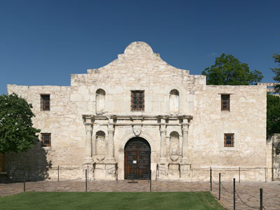
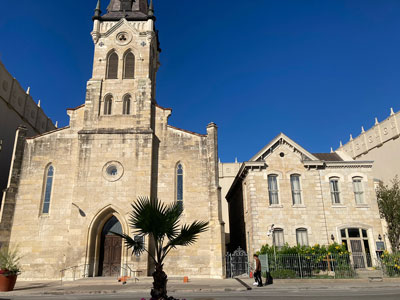
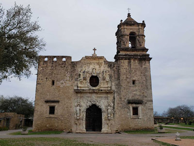
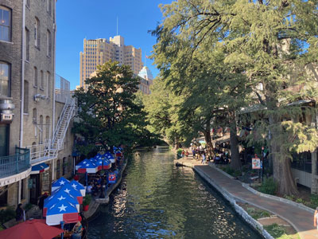
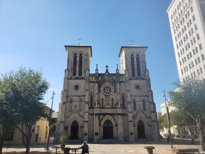
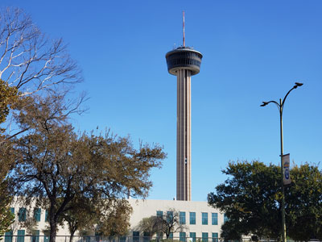

San Antonio Travel Guide
City in south-central Texas with a rich colonial heritage. The Alamo, an 18th-century Spanish mission preserved as a museum, marks an infamous 1836 battle for Texan independence from Mexico. San Antonio’s River Walk, a network of walkways along the banks of the San Antonio River, is lined with cafes and shops.
Places to See in San Antonio

Jeff P from Berkeley, CA, USA, CC BY 2.0, via Wikimedia Commons; Image Size Adjusted
.jpg){kind=link}
The Alamo
Historic Spanish mission and fortress compound founded in the 18th century by Roman Catholic missionaries and was the site of the Battle of the Alamo in 1836
Jeff P from Berkeley, CA, USA, CC BY 2.0, via Wikimedia Commons; Image Size Adjusted
Bexar County Courthouse
Historic Romanesque Revival courthouse featuring distinctive red sandstone architecture, a landmark clock tower, and one of the oldest continuously operating county courthouses in Texas.
Jeff P from Berkeley, CA, USA, CC BY 2.0, via Wikimedia Commons; Image Size Adjusted
Hemisfair Park
Urban park district featuring expansive green spaces, playgrounds, splash pads, public art, community events, and walkable access to many of the city's most recognizable landmarks.

Jeff P from Berkeley, CA, USA, CC BY 2.0, via Wikimedia Commons; Image Size Adjusted
Saint Joseph Catholic Church
Historic Gothic Revival church featuring intricate stained glass, ornate interior architecture, and a long-standing role as a place of worship and cultural landmark.

Jeff P from Berkeley, CA, USA, CC BY 2.0, via Wikimedia Commons; Image Size Adjusted
San Antonio Missions National Historic Park
UNESCO World Heritage Site preserving four of the five Spanish frontier missions in San Antonio

Jeff P from Berkeley, CA, USA, CC BY 2.0, via Wikimedia Commons; Image Size Adjusted
San Antonio River Walk
Scenic network of riverside walkways lined with restaurants, shops, hotels, public art, and cultural attractions that follows the historic course of the San Antonio River.

Jeff P from Berkeley, CA, USA, CC BY 2.0, via Wikimedia Commons; Image Size Adjusted
San Fernando Cathedral
Historic Gothic Revival cathedral featuring centuries-old architecture, stained-glass windows, religious art, and a continuous legacy of worship dating back to the early eighteenth century.

Jeff P from Berkeley, CA, USA, CC BY 2.0, via Wikimedia Commons; Image Size Adjusted
Spanish Governors Palace
Restored eighteenth-century Spanish colonial residence featuring period furnishings, landscaped courtyards, historic architecture, and exhibits interpreting the region’s early military and civic history.

Jeff P from Berkeley, CA, USA, CC BY 2.0, via Wikimedia Commons; Image Size Adjusted
Tower of the Americas
750-foot observation tower featuring panoramic city views, a revolving restaurant, interactive exhibits, and a 4D theater experience celebrating Texas history and culture.
UT San Antonio Institute of Texan Cultures
Cultural history museum dedicated to preserving and interpreting the diverse people, traditions, stories, and artifacts that have shaped the heritage of Texas.
Witte Museum
Museum dedicated to Texas history, natural science, archaeology, wildlife, and culture through immersive exhibits, dinosaur displays, historic artifacts, and interactive learning experiences.
Overview
San Antonio is the second-largest city in Texas and one of the most historic and visited cities in the Southwest, and it is famous for the Alamo, the mission where a small group of Texan defenders fell to the Mexican army in 1836. The city is also known for the River Walk, a landscaped network of walkways along the San Antonio River, for its five Spanish missions that are a UNESCO World Heritage Site, and for its mix of Tejano, Mexican, German, and American culture. Its Tex-Mex food, its Fiesta celebration in April, and the San Antonio Spurs make it a distinctive and friendly city.
Visitors come to San Antonio to see the Alamo and the missions, to walk the River Walk, and to ride to the top of the Tower of the Americas. They also come for La Villita, the Witte Museum, Market Square, the Pearl district, and the Spurs, and for the nearby Texas Hill Country, which starts to the north of the city.
History
Spanish explorers camped at the San Antonio River on the feast day of St. Anthony in 1691, and in 1718 the Spanish founded Mission San Antonio de Valero, later known as the Alamo, and a presidio to protect it. Canary Islanders arrived in 1731 and founded a civil settlement, and more missions were built along the river to convert and educate the native peoples. In 1836, during the Texas Revolution, about 200 defenders led by William Travis, Jim Bowie, and Davy Crockett held the Alamo for 13 days against thousands of Mexican troops under Santa Anna before being killed, and "Remember the Alamo" became a rallying cry. German immigrants arrived in the 1840s and shaped the city's culture, and the city grew with the railroad, the military, and tourism, with the River Walk created in the 1930s and 1940s.
Sightseeing and Popular Landmarks
The Alamo is the most visited historic site in Texas, with its chapel and museum, and the River Walk is a three-mile loop of walkways with restaurants, shops, and river barge tours. The Tower of the Americas, built for the 1968 World's Fair, has an observation deck 750 feet high, and Hemisfair Park is the site of the fair. The San Fernando Cathedral, Spanish Governor's Palace, and Bexar County Courthouse are historic landmarks, and La Villita is a historic arts village.
Culture and Museums
The San Antonio Missions National Historical Park includes four missions south of downtown, Mission Concepción, Mission San José, Mission San Juan, and Mission Espada, which together with the Alamo form a UNESCO World Heritage Site. The Witte Museum covers the natural and cultural history of Texas, and the Institute of Texan Cultures explores the state's diverse peoples. The San Antonio Museum of Art, the McNay Art Museum, and the Majestic Theatre are other attractions, and the Pearl district has a culinary school and a weekend market.
Parks
San Antonio has more than 200 parks. Brackenridge Park has the San Antonio Zoo, the Japanese Tea Garden, and the Witte Museum, and the San Antonio River Walk Mission Reach extends the river path south to the missions, with trails for biking and walking. The San Antonio Botanical Garden has native Texas gardens, and the Hill Country State Natural Area and Natural Bridge Caverns are a short drive north. Government Canyon State Natural Area has hiking and dinosaur tracks.
Sports
The San Antonio Spurs of the NBA play at the Frost Bank Center and have won five NBA championships, in 1999, 2003, 2005, 2007, and 2014. The team's loyal fans, its international players, and its success under coach Gregg Popovich and stars such as Tim Duncan and David Robinson have made it one of the most respected franchises in the league. In 2023, the Spurs drafted Victor Wembanyama.
Seasons and Weather
San Antonio has a humid subtropical climate. Summers are hot, with highs in the upper 90s°F, and winters are mild, with highs in the 60s°F and almost no snow. Spring and fall are the most pleasant seasons, and April's Fiesta is the busiest time of the year. Severe thunderstorms and flash floods are possible in spring.
This article uses material from Wikipedia as well as information from official tourism and institutional sources. Key references include Visit San Antonio, The Alamo, San Antonio River Walk, National Park Service San Antonio Missions National Historical Park, San Antonio Spurs, Texas Tourism, and National Weather Service Austin/San Antonio. Wikipedia material is from the articles "San Antonio" and "Battle of the Alamo", and is available under the Creative Commons Attribution-Share-Alike License 3.0.